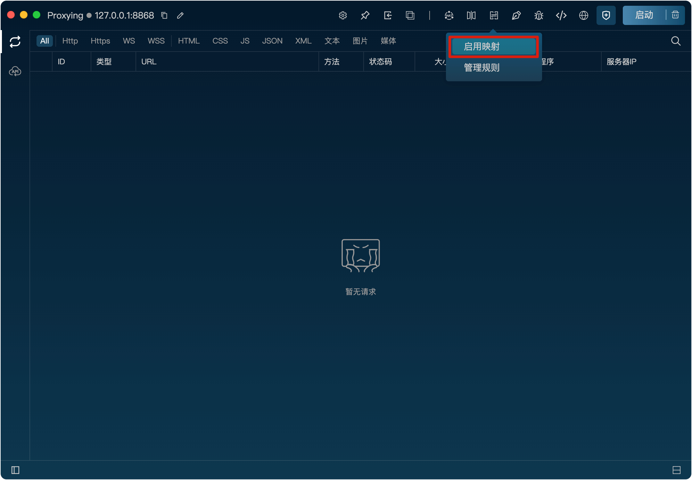
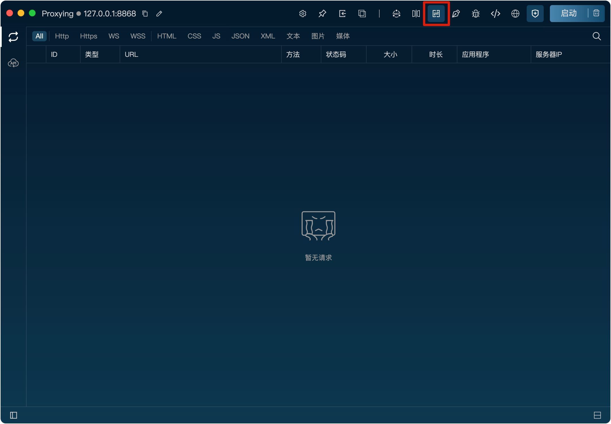
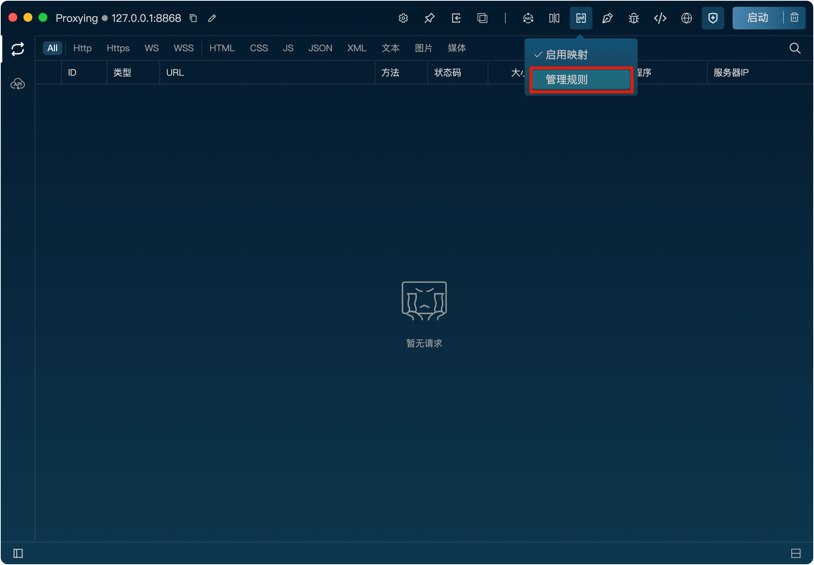
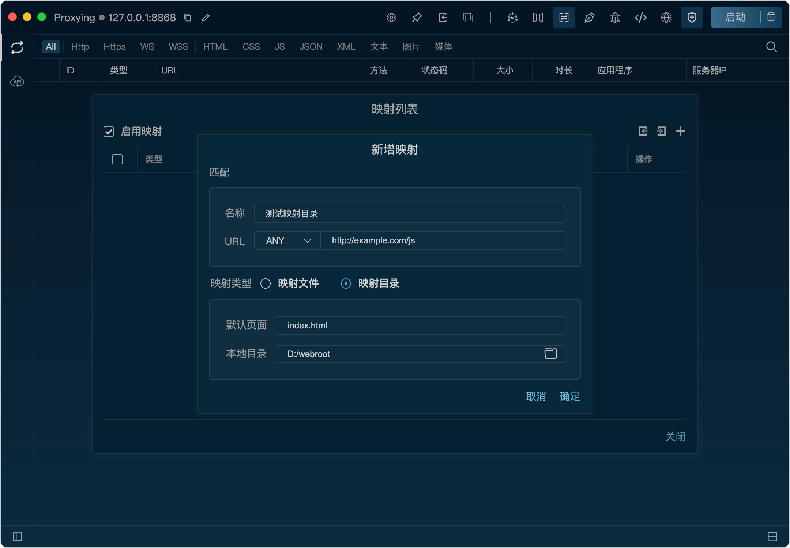

映射
功能
映射功能可以将请求的URL会替换为指定的本地文件路径或者目录，从而实现对单个文件或整个网站的映射，方便前端开发调试。
开启映射功能
将鼠标悬浮到映射图标上，点击“启动映射”按钮即可开启映射功能。

开启后，映射图标会高亮显示，表示映射已开启。

新增映射规则
1、将鼠标悬浮到映射图标上，点击“规则管理”按钮打开映射规则列表。

2、在规则列表弹框里，点击“+”按钮，打开新增规则弹窗。
3、在弹窗里，填写匹配规则、映射类型、映射目录/文件，点击“确定”按钮即可新增规则。
映射类型
映射类型可以选择映射文件或目录两种方式。
映射文件：
请求的URL会替换为指定的本地文件路径，从而实现对单个文件的映射。
映射目录：
请求的URL会替换为本地目录下对应的文件路径，从而实现对整个网站的映射。
例：
请求URL为http://example.com/js/app.js，映射文件时，本地文件配置为D:/webroot/app.js，则请求会映射为D:/webroot/app.js
另外，映射类型选择映射文件时，支持使用正则表达式，从而实现更灵活的匹配方式。启用正则后，本地文件路径可以使用$1-$100来代替URL中的子匹配项。
例：
请求URL为http://example.com/js/app.js，映射文件配置为D:/webroot/$1.js，匹配规则为http://example\.com/js/([a-z0-9]+).js，则请求会映射为D:/webroot/app.js。
例：
请求URL为http://example.com/js/app.js，映射目录时，本地目录配置为D:/webroot，则请求会映射为D:/webroot/js/app.js
